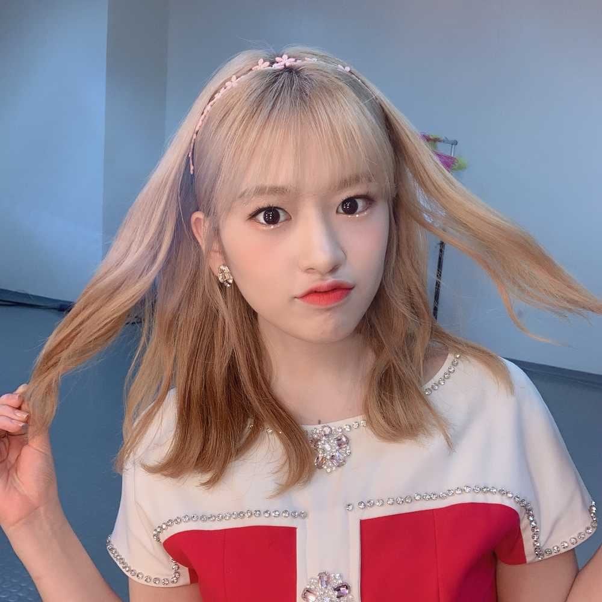

어제 공연도 잘 마치고 왔습니당
공연을 할 때마다 우리가 이렇게나 사랑받고 있구나 하는
마음에 너무 뿌듯하고 기쁜 것 같아요
이제 앞으로 공연들이 더 남았는데요
이번 콘서트 투어가 많이 성장할 수 있는 계기가 되었으면 좋겠네요
이호 오늘 좋은 하루 보냈나용 일요일인데 푹 쉬셨는지
궁금하네요
제 프메가 일기장 같다는 답장을 종종 봤어요 ㅋㅋㅋㅋㅋ
뭐 그럴려고 한건 아니지만.. 점점 저도 모르게 그렇게
되는 것 같아요 학교에 일기장 낼 때는 맨날 밀렸었는데
ㅎㅎ.. 아무튼! 내일도 화이팅하자구요!